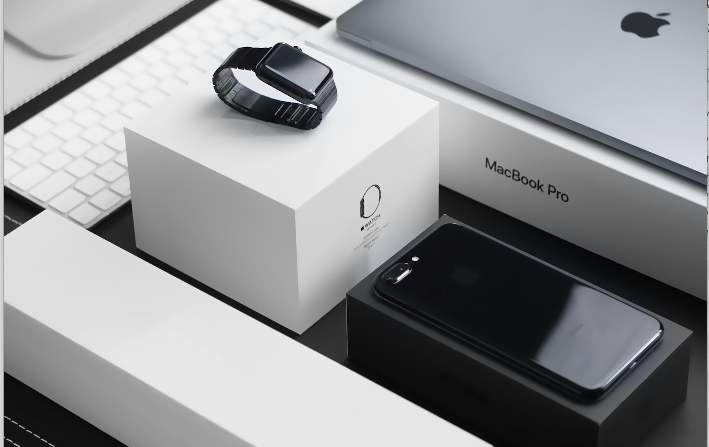
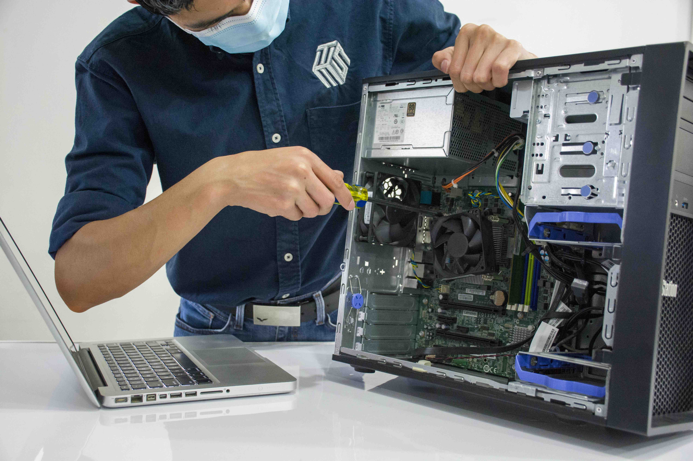

Why Choose Us
At Willis Wireless & Computer Repairs, we pride ourselves on providing top-notch services to meet all your wireless and computer repair needs. Our expert technicians are highly trained to diagnose and resolve issues quickly and effectively, ensuring your devices are back to optimal performance in no time.
With years of experience and a commitment to customer satisfaction, we stand out as the trusted choice for residents in Willis, TX, and beyond. Whether it's repairing your computer, fixing wireless connectivity problems, or offering personalized solutions, we are dedicated to excellence.